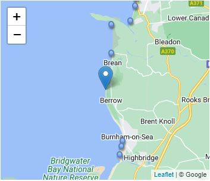
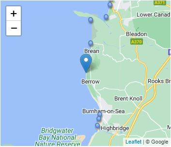

Berrow South lies towards the southern end of Berrow Flats, a 6-mile stretch of sand and mudflats between Burnham-on-Sea and Brean Down. The beach here is flat and sandy, backed by dunes.
Signage warns of dangerous sinking sands at low tide, so care needs to be taken and it is best to avoid going far onto the wet mudflats exposed at low tide. When the tide is out the wreck of MV Nornen, a Norwegian Barque which ran aground here in 1897 is visible.
This part of the Berrow Flats is more tranquil than some of the other resorts along this stretch of the coast and is a great place to come to get away from it all. As the beach faces west, it gets some spectacular sunsets.
 
